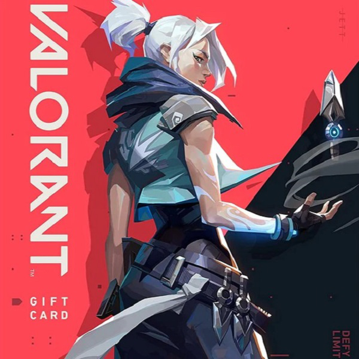

Valorant tem o mesmo ótimo tiroteio do CS, mas com mecânicas que fazem com que o jogo nunca fique obsoleto. Este jogo é bem-sucedido em certas áreas que o CS não teve e apresenta mecânicas menores que o CS deveria ter desde o início, por exemplo, o sistema de venda, o sistema de solicitação e o sistema de ping. Os diferentes personagens introduzem um novo nível de jogo em equipe, com personagens que podem usar suas habilidades em sinergia com os outros, permitindo que grandes jogadas sejam feitas. Outro grande fator sobre este jogo é o fato de que ele pode rodar em um computador de batata. um pc de baixo custo pode executar este jogo sem problemas, com pouco ou nenhum problema aparecendo. Ao contrário da válvula, a Riot realmente ouve sua comunidade e, a cada patch, o jogo fica cada vez melhor. Pessoalmente, achei o CS:GO enfadonho depois de um tempo, então esse jogo foi uma lufada de ar fresco para mim e meus amigos. BATALHE AO REDOR DO MUNDO Cada mapa serve como um palco para mostrar sua criatividade. Os mapas são feitos sob medida para estratégias de equipe, jogadas espetaculares e momentos eletrizantes. Faça as jogadas que todo mundo vai tentar imitar no futuro! A CRIATIVIDADE É SUA MELHOR ARMA. Mais do que armas e munição, VALORANT inclui agentes com habilidades adaptativas, rápidas e letais, que criam oportunidades para você exibir sua mecânica de tiro. Cada Agente é único, assim como os momentos de destaque de cada partida! Eu sugiro totalmente este jogo para quem estiver interessado. DÊ UMA CHANCE! Nesta segunda-feira (5), a Riot Games publicou um vídeo mostrando algumas das novidades que chegarão ao VALORANT em 2023. Além de revelarem que estão trabalhando em novos agentes, os desenvolvedores também confirmaram que o FPS receberá o modo Team Deathmatch no início do Episódio 7. A Riot Games não deu mais detalhes de como o Team Deathmatch funcionará no VALORANT. Apesar disso, vazamentos feitos pelo perfil ValorLeaks indicam que o modo se chamará HURM e terá duas equipes batalhando para alcançar 100 eliminações primeiro. Apesar de não ter dado uma data oficial para a chegada do Team Deathmatch, o Episódio 7 do Ato 2 de VALORANT começa no dia 27 de junho. É provável que além do modo, o jogo também receba um novo agente da função Sentinela.